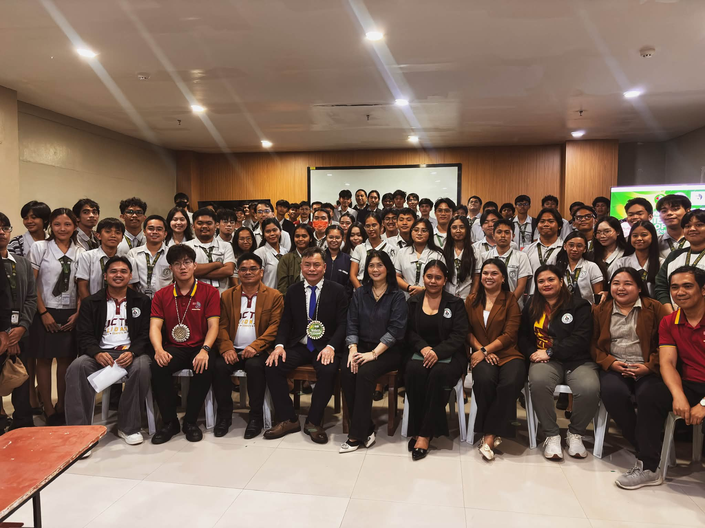

Expanding Opportunities Beyond Borders | Western Leyte College
A day of learning, international conversations, and meaningful connections unfolded at Western Leyte College of Ormoc City as the College of ICT and Engineering welcomed the official delegation from the University of Danang – Software Development Centre (SDC).
University leaders Dr. Nguyen Ha Huy Cuong (SDC Director) and Mr. Nguyen Le Bao Duy (SDC Apprentice & Software Engineer) met with WLC faculty and the pioneer batch of international immersion students to share technological perspectives, modern software engineering practices, and cross-border career pathways.